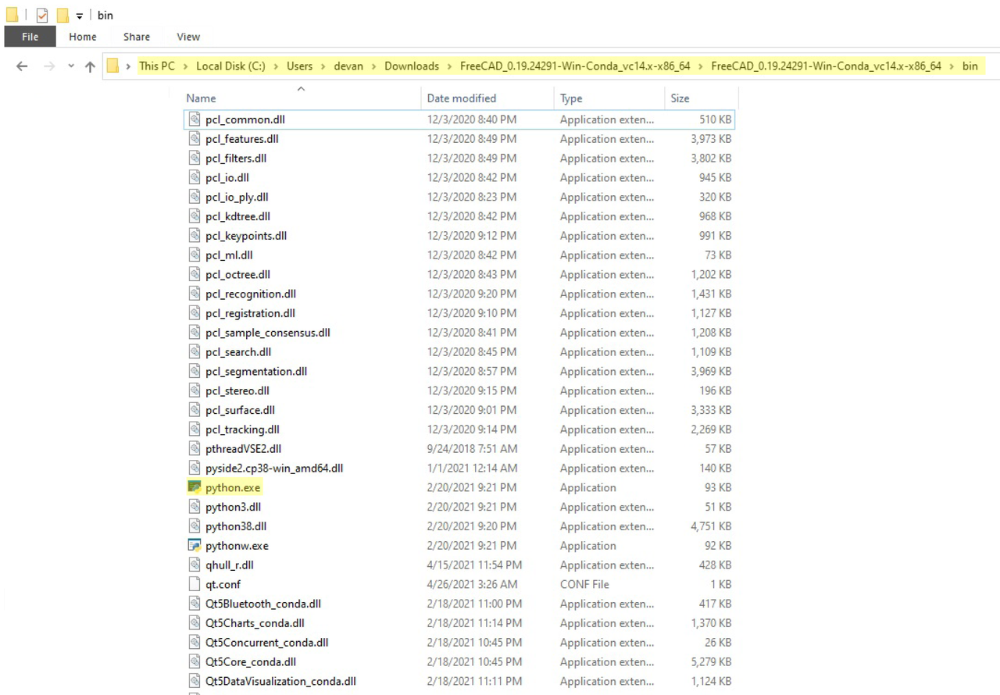
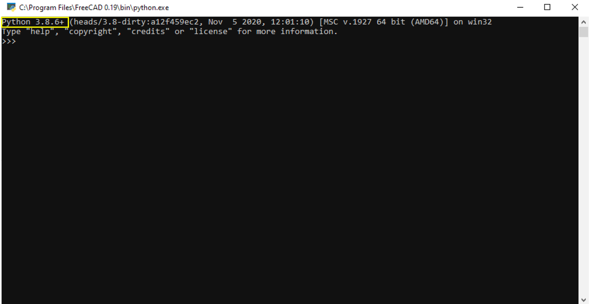
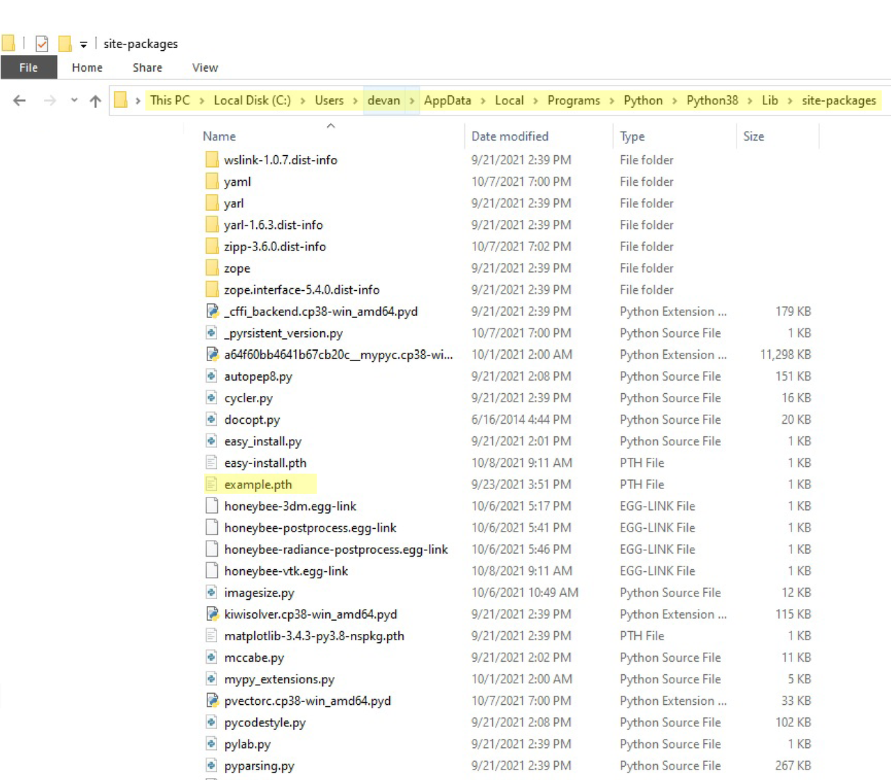

Importing Part module in ifcOpenShell-python
Importing Part module from FreeCAD in python
I was looking for a way to extract BREP (Boundary representation) from IFC and I stumbled upon this article. In the article, you'll see that Cyril uses the Part module of FreeCAD. This post shows you how you can import the Part module in Python.
Step-1
Download FreeCAD from here and extract it to a location on your system. You are going to use the extracted directory folder so choose such a location on your system where you can keep the extracted folder long-term. I have saved the folder in the "D" drive of my machine.
Step-2
Find the version of Python being used in FreeCAD. In the downloaded folder go to "bin", and find python.exe.  Double click on python.exe and observe the python version. 
Step-3
Download and install the matching python version on your system.
Step-4
Once installed, go to the folder named "site-packages" in your python installation and create a file named "example.pth". The file name can be anything here. 
Step-5
Lastly, in the example.pth file, add paths to the folders "bin" and "lib" in the FreeCAD folder you downloaded in Step-1.
After doing all the steps, you will be able to import the Part module in Python and would be able to work with BREPs.
Usage
import FreeCAD
import Part
Comments